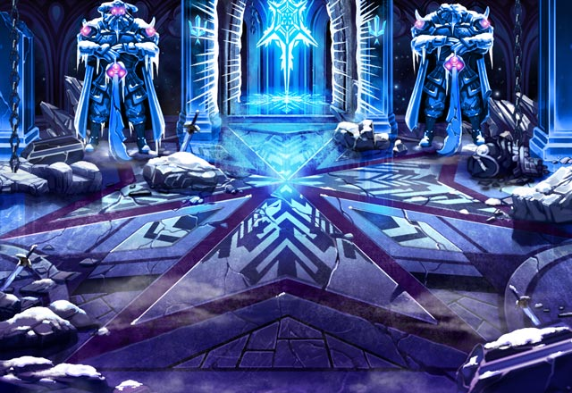

パリス
かつて魔神たちの盟主が ここで会合を行っていたのね。
ルジーナ
今はそんなことに感心してる場合じゃ ねーだろーが。
パリス
入ったばかりなのに いくつも見受けられるわ。
パリス
モーラの元にたどり着くまでに どれだけあることか……。
ルジーナ
レームでモーラと戦った橋を 覚えてるか？
セリア
私とShou-chanが 邪魔する敵を排除するんだっけ？
パリス
えっ？ でも、あの時ルジーナはセリアに……。
ルジーナ
お前は面倒事が起きた時の処理担当だ。 何かが起きたらお前がなんとかしろ。
ルジーナ
それまでは、Shou-chanたちと 一緒に邪魔な連中を排除してろ。
パリス
でも、カルが後ろにいると思うと 安心して動けるわね。
セリア
カル、Shou-chanが一緒ってことは 絶対に何か起こるだろうから
カル
それに、どうせ奥で召喚老の爺さんたちや ベルツにリオメルグさんに会うだろうしな。
ルジーナ
ケッ、奴ら俺たちが罠を解くのを 待ってやがるんだろうがな。
パリス
うるさい男ね。 あなたに言われるまでもないわ。
パリス
Shou-chan、セリア、カル そちらも気を付けてね。
カル
セリア、Shou-chan、 モーラとの決着の時も近い。